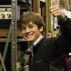

| Day#1 11:45 - 13:00 |  | Keynote Speech: Will Jack - "I built myself a nuclear fusion reactor when I was 16"
Will Jack is a 17 year old high school student from the US who enjoys nothing more than building nuclear fusion reactors in his basement. He will present his work on the Inertial Electrostatic Confinement (IEC) fusion reactors that he has built, speaking not only about the theory behind them, but how he developed them, his current work, and his goals for the future as well.
This keynote speech is not about cloud computing. |
| Day#1 10:30 - 11:45 |  | Bionerd23 - Radioactivity is in the air for you and me
An anonymous woman who goes by the handle of "bionerd23" will give you a very comprehensive, bottom-up view of man-made and natural nuclear radiation and how you can detect it. Mind you - when we say "comprehensive", this means things like building yourself ion chambers for detecting radiation, and studying and operating a small-scale homemade fusion reactor. Have a look at her excellent videos. |
| Day#1 17:30 - 18:00 | | Evangelia Gousiou - Open Hardware at CERN
Evangelia Gousiou will tell you about the Open Hardware Initiative at CERN, covering various aspects, such as the Open Hardware Repository, the CERN Open Hardware Licence, the commercial paradigm used in collaborating with companies and current efforts to boost FOSS tools for hardware development. |
| Day#2 10:00 - 11:15 |  | Ben Krasnow - Homebuilt X-ray backscatter imaging system (airport body scanner)
Ben Krasnow, "Hacker Extraordinaire" at video game company Valve, built an X-ray backscatter imaging system from parts found on eBay. This system works by scanning a very thin beam of X-rays across the target, and measures the amount of backscatter for a given beam position. The beam is scanned mechanically by a rotating chopper (collimator) wheel, and by tilting the rotating wheel on an orthogonal axis. The output image is generated on an oscilloscope by matching the horizontal scan speed to the rotating wheel, and using a potentiometer to measure the vertical axis position. The scope's brightness (z axis) is controlled by the amount of backscatter signal received by a large-area detector. Thus, the image is constructed bit by bit.
He might
also
talk about Raman spectroscopy and other hacks, stay tuned. |
| Day#3 12:30 - 13:00 |  | Aleksander Zawada - DIY triodes and other vacuum tubes
Aleksander runs "Prywatna Wytwórnia Lamp" (PWL), a one-man DIY vacuum tube laboratory in Warsaw. The name translates to "Private Tube Manufacturer" - a pun on PWLR ("National Tube Manufacturer"), the first Polish tube manufacturer after WWII. There, he makes not only triodes, but also canal ray tubes, a RGB magic eye, several Crookes tubes, Geiger tubes, and many other incredibly amazing devices. This is serious stuff - he starts with raw materials like glass, metal and phosphor powders. |
| Day#3 18:15 - 19:30 | | Jasper Nance - Microsecond High Speed Photography and Scanning Electron Microscope
She will present these projects from the perspective of using community resources, specifically those from Heatsync Labs, Arizona's first hackerspace. This includes materials, people, expertise, and crowdsourcing to scrounge and hack together technologically challenging endeavours. The projects are not an end in themselves, but rather serve as hackable platforms for both community and educational outreach to teach skills and develop new and hackable ways of doing difficult and expensive tasks. For a quick glimpse at Jasper's projects, be sure to check her impressive photo portfolio. |
| Day#3 15:45 - 17:00 |  | Harald Welte - Osmocom
Harald Welte will present the Osmocom project he founded. In particular, there will be OsmocomBB, a free software GSM stack evolved enough to actually make phone calls and send SMS (plus all the possible explorations of the GSM system), and OsmoSDR, a small-size, low-cost software defined radio device. |
 Some electronics books from the 50s claimed making triode tubes would be
an impossible endeavour for amateurs. Today, there are at least two DIY
laboratories making not only triodes but also all sorts of vacuum
electron devices.
Some electronics books from the 50s claimed making triode tubes would be
an impossible endeavour for amateurs. Today, there are at least two DIY
laboratories making not only triodes but also all sorts of vacuum
electron devices.
{kind=link}